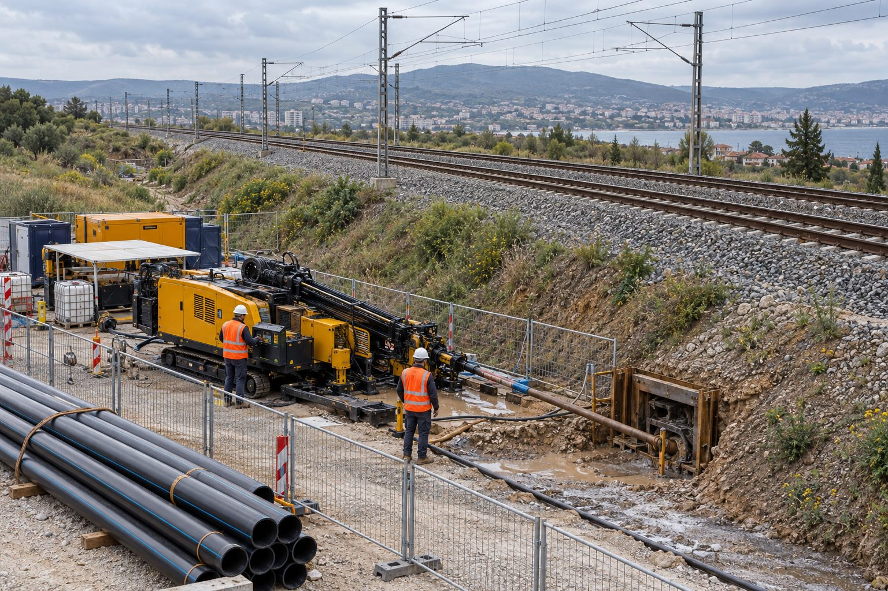

Hat emniyeti
Ray ve balast yapısı korunur, oturma riski kontrol altında tutulur.
Hizmetlerimiz · 09

Demiryolu Altı Geçiş Uygulamaları
Demiryolu koridorlarında hat emniyetini bozmadan, ilgili kurum şartlarına uygun planlı altyapı geçişleri.
Demiryolu altı geçişleri, ray hattının ve balast yapısının korunmasını gerektiren hassas uygulamalardır. Çelik kılıf ile boru sürme veya yönlendirilebilir yatay sondaj, hat emniyetini bozmadan geçişi mümkün kılar.
TCDD ve ilgili işletmecilerin teknik şartları (derinlik, kılıf, oturma kontrolü) projeye işlenir; uygulama planı tren trafiğine göre koordine edilir.
Neden Yiba?
Ray ve balast yapısı korunur, oturma riski kontrol altında tutulur.
Ray yükü altında hattı koruyan kılıf sürme.
Kurum şartnamesine uygun derinlik, kılıf ve izleme.
Tren trafiğiyle uyumlu çalışma planı.
Sık sorulan sorular
TCDD ve ilgili hat işletmecisinin teknik onayı ve geçiş izni gerekir; süreçte deneyimimizle destek oluyoruz.
Kazısız yöntemlerle çoğu geçiş tren trafiği durdurulmadan yapılır; plan kurumla koordine edilir.
Uygun kılıf, kontrollü ilerleme ve gerektiğinde izleme ölçümleriyle yüzey oturması engellenir.